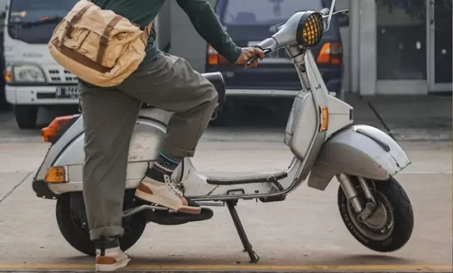
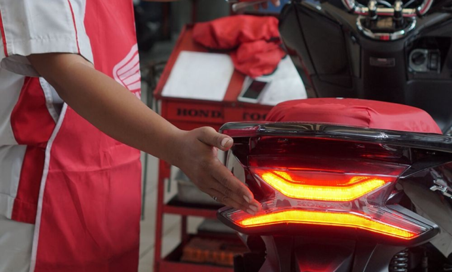
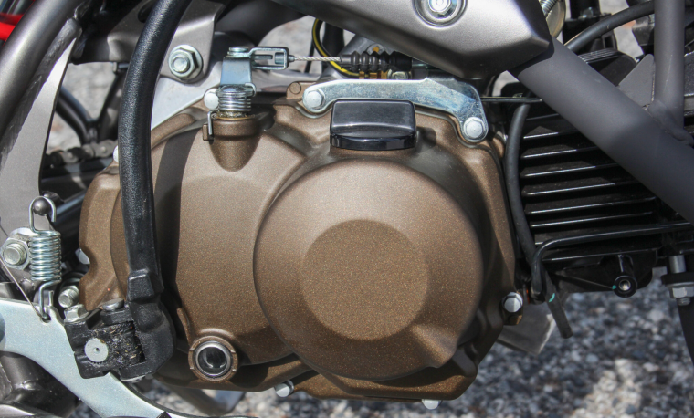
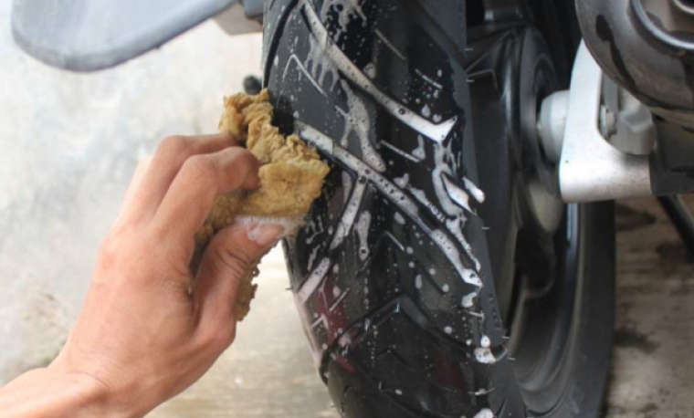
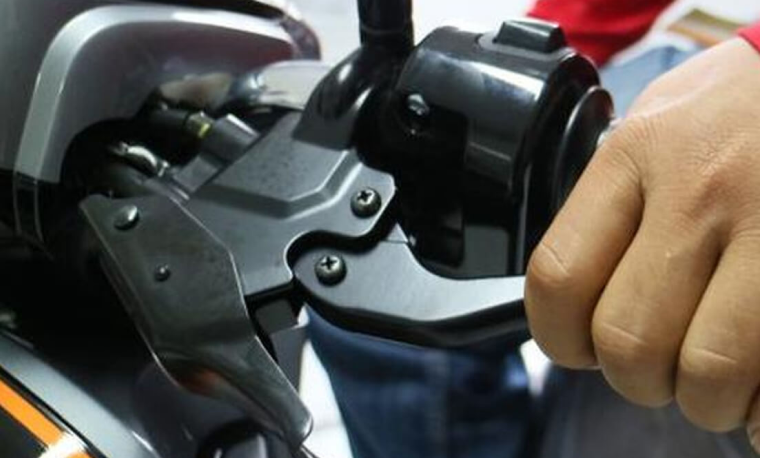

Sepeda motor merupakan salah satu alat transportasi yang paling praktis dan banyak digunakan oleh masyarakat karena kemudahannya dalam menjangkau berbagai tempat, terutama di daerah perkotaan maupun pedesaan. Meskipun begitu, kendaraan roda dua ini tidak luput dari berbagai permasalahan teknis yang dapat mengganggu kenyamanan dan keselamatan saat digunakan. Untuk itu, penting bagi setiap pemilik motor memahami jenis-jenis kerusakan yang umum terjadi, serta mengetahui solusi atau langkah penanganan yang tepat. Berikut ini adalah sepuluh jenis kerusakan yang paling sering ditemui pada sepeda motor beserta cara mengatasinya.
Masalah ini merupakan salah satu yang paling sering dialami pengguna motor. Penyebab umumnya adalah busi kotor atau rusak, aki lemah, atau sistem bahan bakar yang tersumbat. Saat tombol starter ditekan, motor tidak bereaksi atau hanya terdengar bunyi klik. Solusinya adalah memeriksa kondisi busi dan menggantinya jika perlu, mengisi ulang atau mengganti aki, serta membersihkan karburator atau injektor agar aliran bahan bakar kembali lancar.
Lampu yang tidak menyala dengan normal bisa membahayakan saat berkendara malam. Umumnya disebabkan oleh aki yang sudah melemah, bohlam putus, atau gangguan pada kabel kelistrikan. Perbaikannya meliputi pengecekan aki, mengganti bohlam, dan memastikan tidak ada kabel yang terputus atau konsleting.
Jika motor terasa sangat panas bahkan setelah perjalanan singkat, kemungkinan terjadi overheat. Penyebabnya antara lain oli mesin yang tidak diganti secara rutin, kipas radiator mati, atau pendingin mesin tidak bekerja maksimal. Solusinya adalah rutin mengganti oli, membersihkan sirip pendingin, dan memastikan sistem pendingin bekerja dengan baik.
Ban bocor atau kehilangan tekanan angin dapat disebabkan oleh benda tajam seperti paku, atau usia ban yang sudah tua. Kondisi ini cukup berbahaya jika dibiarkan. Perlu dilakukan tambal ban, penggantian ban baru, dan pengecekan tekanan angin secara rutin agar berkendara tetap aman.
Rem yang terasa kurang pakem atau bahkan blong sangat berbahaya. Hal ini bisa terjadi karena kampas rem habis atau cairan rem yang kurang. Solusinya adalah mengganti kampas rem secara berkala dan memastikan cairan rem selalu dalam batas yang cukup.
